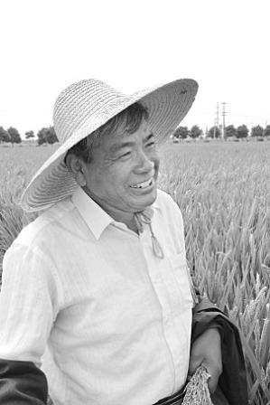

水稻育种专家--端木银熙(图)

一顶白色草帽，一双黑色长筒雨靴，一身粗布蓝衣，手拿一把黄澄澄的稻穗……在江苏常熟农科所水稻实验基地，当这位老农装束的人迎面向我们走来时，无论如何想不到他就是有“江苏袁隆平”之称，20多年来先后有17个水稻新品种分别通过国家级和省级鉴定，主持培育的水稻新品种在江、浙、沪、皖、鄂等省市推广面积累计超过3500万亩，增产稻谷10亿余公斤，增加社会效益20多亿元的育种家端木银熙。
一生都坚持学习从初中生到水稻育种专家
16岁那年，端木银熙的父亲去世，刚刚初中毕业的他不得不告别无限留恋的学校，来到生产队参加集体劳动。18岁那年，端木银熙被大队推荐到公社农技站当“农技员”，1976年5月，经过考核，他被抽调去新成立的县农科所，开始了长达40多年的水稻良种研究工作。
水稻育种是门科学，对于仅有初中文化的端木银熙来说，深感“底气”不足，于是决定自学。农学专业的大专考试共有13门课程，每天早上5点到7点是他学习的黄金时间，从不间断。晚上入睡前，他躺在床上，把一天学习的东西在脑海里电影似放一遍，加深印象。从1984年6月开始至1990年的6个春秋里，他以超常的毅力，终于拿到了大专文凭。
端木银熙说，书本上学习重要，更重要的是在实践中学习。1996年，他结识了“杂交水稻之父”袁隆平院士，这十来年，他从袁院士那里汲取了丰富的营养：袁院士的刻苦精神、对技术钻研的态度深深地感染着他，教育着他；袁院士杂交育种的理论、方法让他豁然开朗。
在端木银熙眼里，同行们都是他的老师。前些年，周边县市的兄弟农科所很活跃，他总是主动上门去求经。端木银熙说，总结同行的经验和教训，避免少走弯路，他从苏州吴县农科所就学到，亲本不育系的综合性状一定要全面。这些年，每年四月，袁院士和他的团队都要在海南的南繁基地召开一次杂交育种交流汇报会，端木银熙是每会必到。在会上，能了解国内外育种的方向动态、同行们在育种过程中的心得和发现，大开眼界，大受启发。
袁隆平院士对他称赞有加：端木银熙是个难得的真正的水稻育种专家。他育种目标明确，亲本采集认真，基础工作扎实，善于利用常规育种成果选育不育系，善于改进育种程序，以此缩短育种年限。他起步虽晚，但是出成果早，出了辉煌成果。
2005年，因成果突出，端木银熙破例被评为正高级推广研究员。
一生都在积累从常熟基地到海南三亚
人的生命有限，端木银熙恨不得将一天掰成两天用，一年能干两年和三年的活。端木银熙说，育种虽有一种运气的成分，但更重要的是靠日积月累。40年来，除了不得不参加的活动和会议，他都要下到地里去看，包括节假日。上千万个亲本的米质要测定，抗性要通过接种来反映，性状、遗传特性和遗传规律要不断地去观察，一个个积累起来，在他脑海里定格。这些亲本在不同的时期、不同的气候有着不同的表现，因此，要随时了解他们的长势，及时捕捉到其特殊性能的体现。往往田里的一株水稻短时间内体现的独特性征就有可能为育种工作带来突破，仔细查看其某一瞬间的灵感突现就有可能诞生新的品种。
1994年至2008年的14年间，每年5月初至10月下旬，无论刮风下雨，端木银熙几乎每天都在常熟郊区的育种基地。每天晚上，农科所的整个小院除了门卫室外，唯独3楼端木银熙办公室还亮着灯光。
为了加快育种的进程，端木银熙每年10月在常熟收获完水稻之后，便赶到海南进行“南繁加代育种”，一直干到次年4月底5月初。这样，他一年中过两个夏天、种两茬水稻。
“南繁”基地的工作和生活条件十分艰苦。水稻育种工作离不开露天作业的环节，父母本配组必须在田头才能完成。海南温度之高、太阳辐射之强，远远超出江南人的想象，二三天下来，人就会脱一层皮！更让人头痛的是，水稻田里蚊虫成群，毒蛇出没，端木银熙和课题组人员只得穿上又重又闷的长统套鞋下田。下午一点半到两点是水稻的开花期，而试验田里用于水稻杂交的小袋子每天有700多只。每隔5分钟，他们就要头顶烈日，在炎热的水稻田里为杂交水稻授粉。水稻开花只有短短的几十分钟，为了不误水稻开花的最佳时机，他们只能守在旁边，眼睛盯着稻穗，看着它一点点长大、开花！
长年累月的辛勤工作，使端木银熙患上了肾囊肿，身体十分虚弱，有好多次晕倒在田头，吓坏了他的助手，但他从不放弃。为掌握第一手资料，从1995年开始，他年年带着两个助手到三亚“南繁”基地。两名助手是3年轮换一回，而端木银熙16年的冬春都是在三亚度过的。
一生都要思考从太湖粳新品到“常优”系列
对一个育种人来说，什么最苦？端木银熙说，不在体力劳累，再累休息一晚上就恢复了；苦在压力，苦在要不停地思索中。农民出身的他最知道农民苦在哪里，他最不愿意看到的是因为使用的水稻品种不好而让农民一年白辛苦。常熟市给了他最大的支持，尤其是房地产经济热得发烫时，市里在城边的黄金地块辟出千亩地给他做实验基地，他不能辜负领导的厚望。水稻育种，追求的是既要产量高，又要米质好，还要抗性好，这是一个世界性难题。端木银熙一直在苦苦思考着，如何通过最直接、最有效、最省钱的办法——杂交，培育一种米质好、产量高、抗性强的水稻新品种。
端木银熙在上世纪70年代中期，参与育成“577-5”、“583-6”、“黄原丰”等早粳(籼)水稻新品种，后参加了苏州市水稻育种协作攻关组及江苏省农业重大攻关项目——单季晚粳新品种选育研究，培育成功了“太湖粳一号”、“太湖粳二号”和常农粳系列新品种，分别通过省级审定，在太湖稻区广泛推广应用。
上述新品种的培育属于常规杂交育种，要想在品质和产量上获得突破，就必须进行优势杂交育种。优秀的亲本是优质组合的基础，突破杂种优势利用又是关键中的关键。端木银熙想着如何利用常规育种成果选育好的不育系。端木银熙首先从亲本采集和培育不育系上下功夫，经过长时间攻关，终于育成理想的不育系“武运粳7号A”。1998年春，端木银熙对“武运粳7号A”不育系配置的54个杂交组合进行新组合优势鉴定，发现“R254”恢复系与“武运粳7号A”不育系所配这一组合具有明显的优势，生长清秀，熟期适宜，且很好地兼顾了品质和抗性。1999年秋，这一组合定名为“常优99-1”，并在2002年和2003年分别通过了省级和国家级审定，定名为“常优1号”。
2004年，“晚粳不育系武运粳7号A与新组合‘常优1号’的选育及应用”被列入国家高科技研究发展计划（863计划）、“973计划”和国家星火计划。2005年，“常优1号”被农业部确定为全国50个水稻主导品种之一，2007年最高田块亩产达851公斤，创国内麦茬机插单季晚熟粳稻亩产最高纪录，成为国家、省单晚粳组的对照品种。
之后，端木银熙又相继育成了“常优”系列2号至5号4个杂交粳稻，并分别通过国家级鉴定。其中2号至4号”仍以“武运粳7号A”为母本，而“常优5号”则利用另外培育的一个不育系“常10-11A”，不仅亩产仍稳定在700公斤上下，而且米质达国标一级，受到广大农民的普遍欢迎。
端木银熙说，他已年逾花甲，身体许可的话还能干个十年八年，正好一个育种周期。他的理想是，育成一个抗性好、增产8%~10%、制种产量稳定在400公斤的突破性品种，为他的水稻人生画上一个圆满的句号。
本报记者 莫小民 肖力伟 通讯员 陈培元
(文章来源：农博网--农民日报)